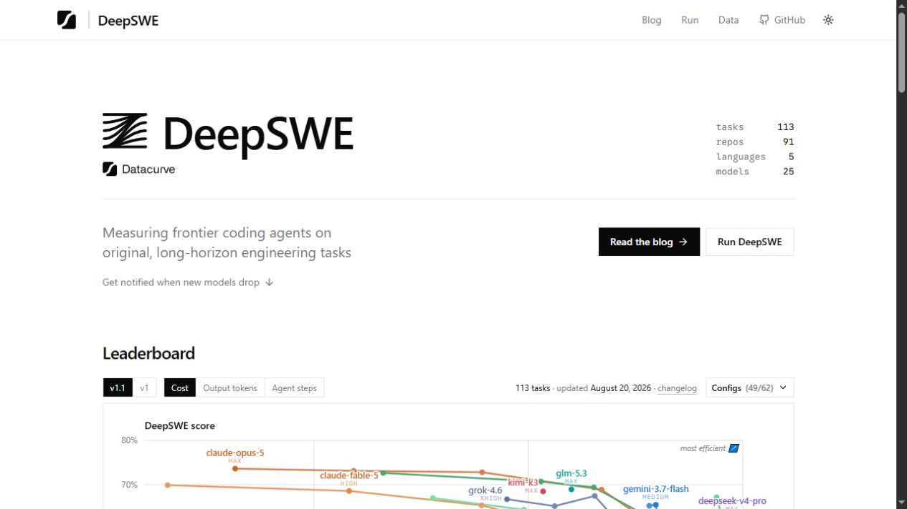
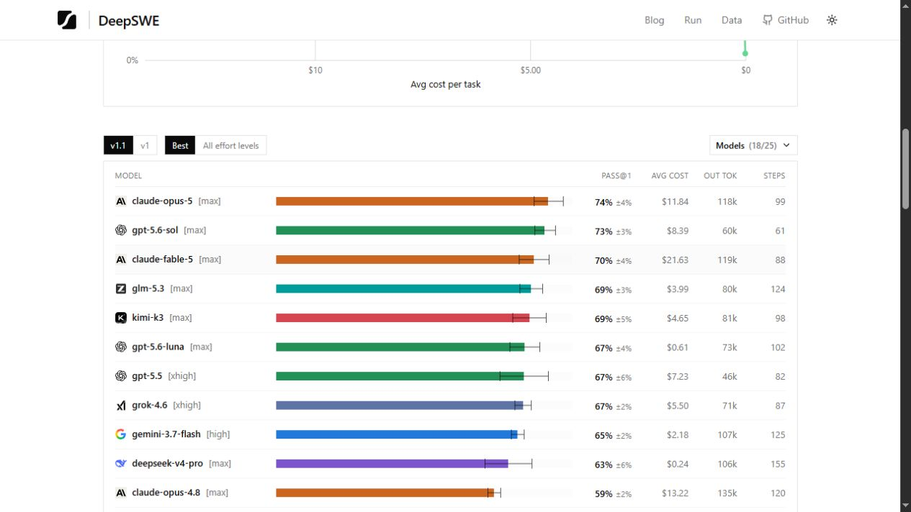
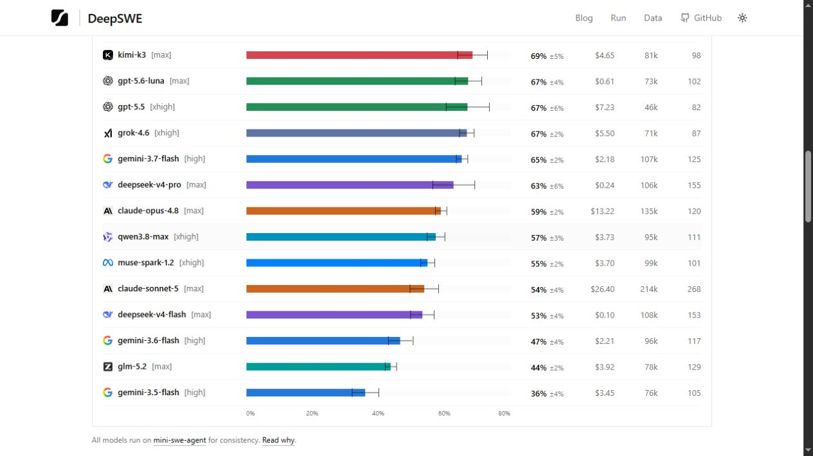
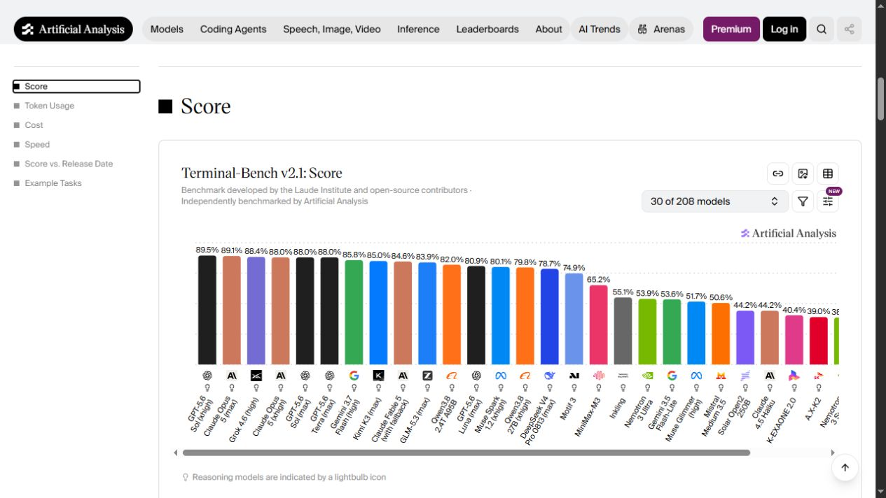
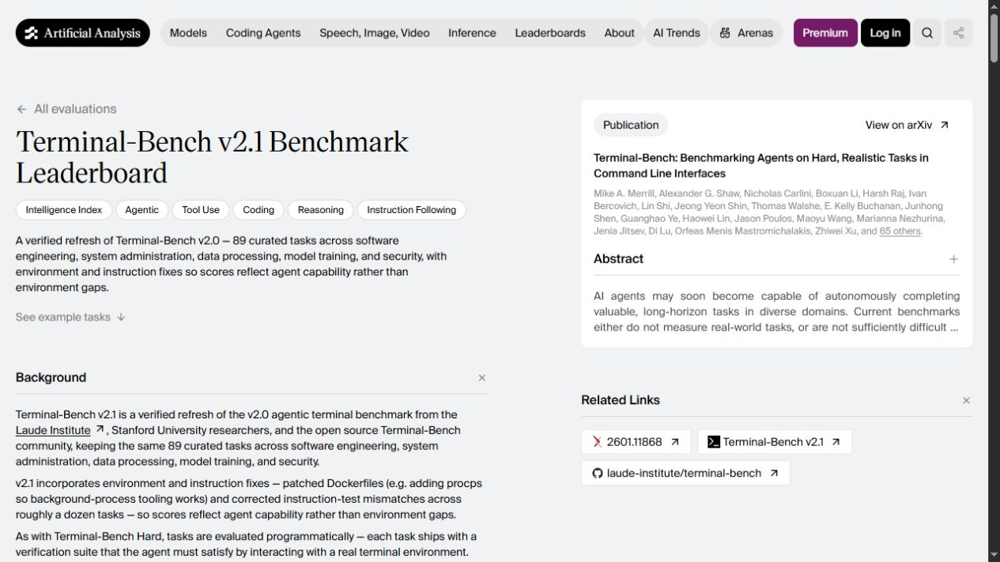
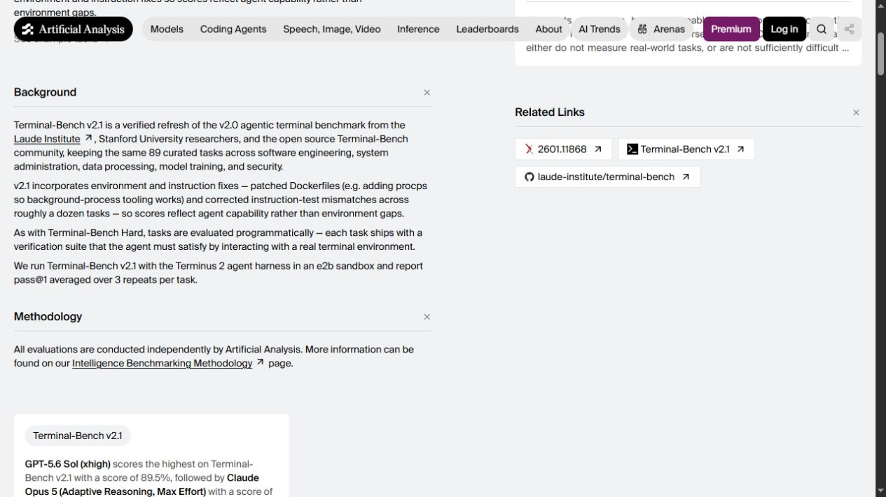
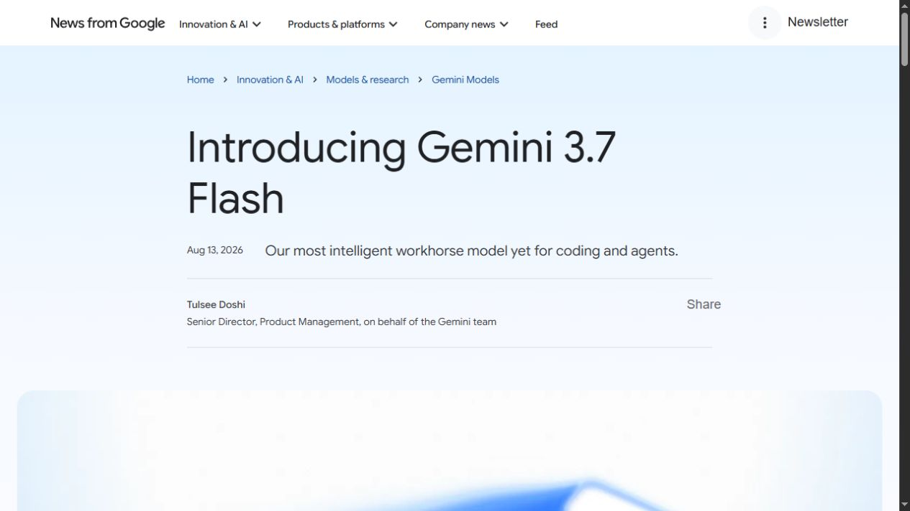
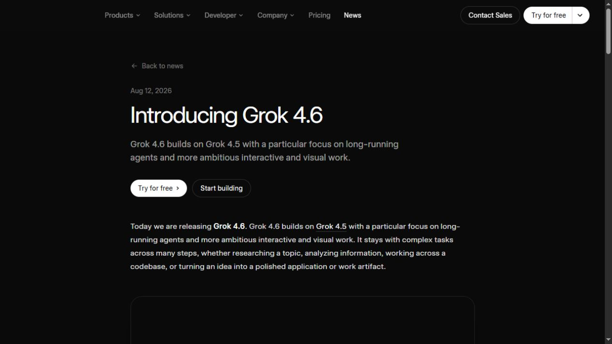
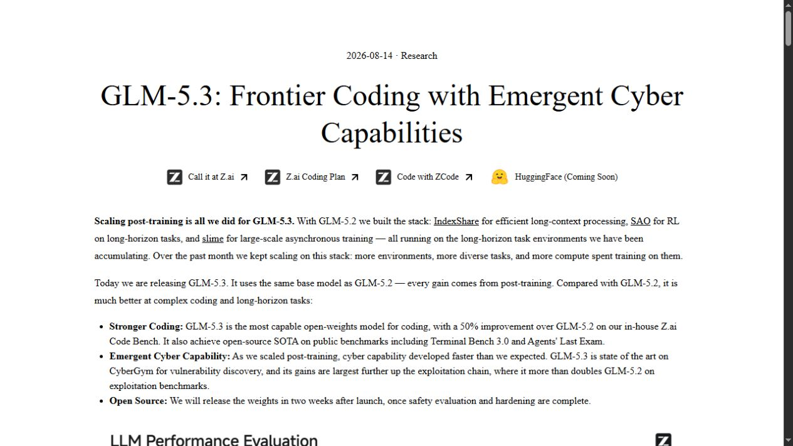
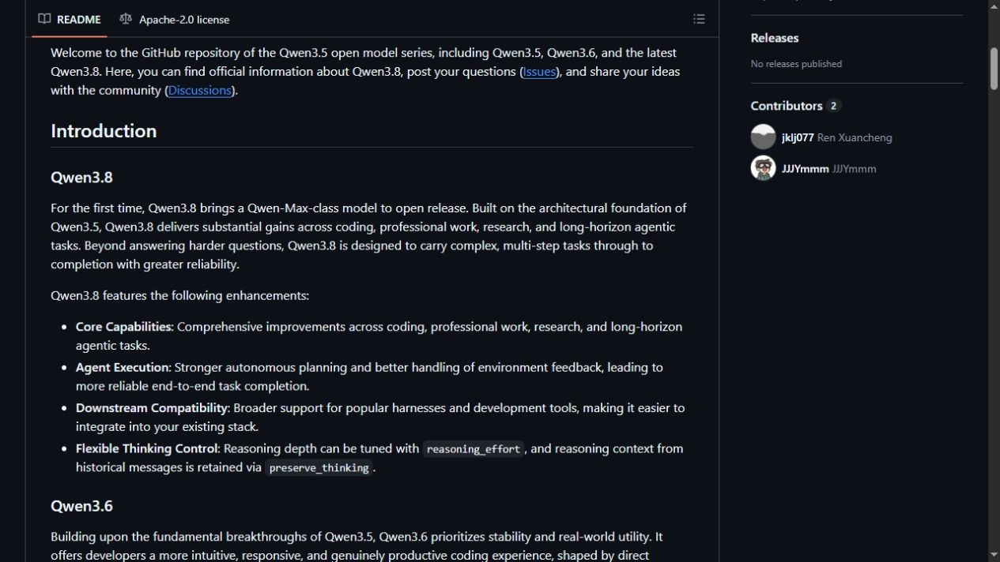

DeepSWE v1.1
Added the visible Best rows for GLM-5.3 max (69), Grok 4.6 xhigh (67), Gemini 3.7 Flash high (65), DeepSeek V4 Pro max (63), and Qwen3.8-Max xhigh (57).
Five inserts; no existing source identity replaced.
Scheduled curation · 24 August 2026
A full 19/19 tracked-benchmark sweep found five evidence-backed DeepSWE additions. A separate protocol review accepted Artificial Analysis' Terminal-Bench v2.1 implementation with its exact Terminus 2 harness and ten visible top rows.
Added the visible Best rows for GLM-5.3 max (69), Grok 4.6 xhigh (67), Gemini 3.7 Flash high (65), DeepSeek V4 Pro max (63), and Qwen3.8-Max xhigh (57).
Five inserts; no existing source identity replaced.
Accepted as Terminal-Bench v2.1 (AA Terminus 2): 89 refreshed tasks, Terminus 2 in e2b, pass@1 averaged over three repeats.
One benchmark and ten top-row inserts.
| Benchmark | Model configuration | Score | Operation |
|---|---|---|---|
| DeepSWE | GLM-5.3 (max) | 69.0 | insert |
| DeepSWE | Grok 4.6 (xhigh) | 67.0 | insert |
| DeepSWE | Gemini 3.7 Flash (high) | 65.0 | insert |
| DeepSWE | DeepSeek V4 Pro (Max) | 63.0 | insert |
| DeepSWE | Qwen3.8-Max (xhigh) | 57.0 | insert |
| TB v2.1 AA | GPT-5.6 Sol (xhigh) | 89.5 | insert |
| TB v2.1 AA | Claude Opus 5 (Max) | 89.1 | insert |
| TB v2.1 AA | Grok 4.6 (high) | 88.4 | insert |
| TB v2.1 AA | Claude Opus 5 (xhigh) | 88.0 | insert |
| TB v2.1 AA | GPT-5.6 Sol (max) | 88.0 | insert |
| TB v2.1 AA | GPT-5.6 Terra (max) | 88.0 | insert |
| TB v2.1 AA | Gemini 3.7 Flash (high) | 85.8 | insert |
| TB v2.1 AA | Kimi K3 (max) | 85.0 | insert |
| TB v2.1 AA | Claude Fable 5 (adaptive max/fallback) | 84.6 | insert |
| TB v2.1 AA | GLM-5.3 (max) | 83.9 | insert |
Checked top rows and source freshness for ARC-AGI-3, APEX-Agents-AA, Humanity's Last Exam, SciCode, Terminal-Bench Hard, SWE-Bench Pro, DeepSWE, SpatialViz-Bench, EnigmaEval, ARC-AGI-2, TextQuests, IntPhys 2, ERQA, MMMU-Pro, SWE-bench Verified, MindCube, AA Long Context Reasoning, Tau2-Bench, and SkateBench v2. Only DeepSWE yielded new rows that met identity and screenshot requirements.
OpenAI, Anthropic, Google, xAI, Z.ai, DeepSeek, Qwen/Alibaba, Moonshot, Meta, and MiniMax were checked. Gemini 3.7 Flash, Grok 4.6, GLM-5.3, and Qwen3.8-Max entered this batch only where an accepted benchmark exposed their exact effort configuration. No unconfigured family-level score was inferred.
Current, authoritative, public methodology, strong frontier relevance, and score dispersion. The protocol-specific name preserves harness identity.
The public leaderboard mixes Codex, Claude Code, Grok Build, and mini-SWE-agent harnesses. SupraBench needs a first-class harness dimension before ingestion.
The scored four-project suite is private; only a Lite example is public, preventing reproducibility.
Promising, but pairwise Elo and the web/shell harness need stable scale and protocol treatment. EnterpriseOps-Gym-AA remains in the watchlist.










Production data applied: manifest validation passed; the reviewed dry-run planned 9 models, 1 benchmark, and 15 inserts; 108/108 tests passed before and after apply; all 15 scores were mirrored; Convex and D1 both contain 563 scores with zero drift; the post-apply dry-run reports all 15 rows unchanged. Git publication and visible live-page verification follow this data gate.